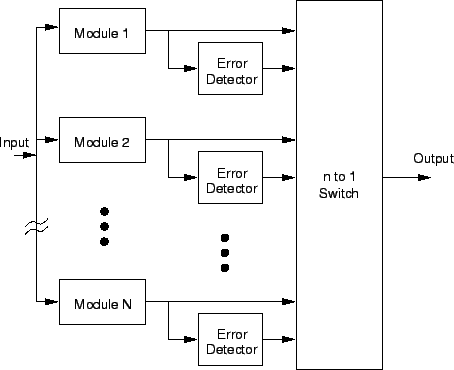

Next: ระบบคงทนต่อความเสียหายแบบอื่นๆ
Up: ระบบที่คงทนต่อความเสียหาย
Previous: ระบบตรวจสอบความเสียหาย
Contents
Index
ระบบสำรองพร้อมทำงาน
ระบบสำรองพร้อม (Standby Sparing) เป็นลักษณะการออกแบบระบบที่คงทนต่อความเสียหายอีกวิธีหนึ่ง โดยที่ขณะทำงานจะมีหนึ่งโมดูลทำงานอยู่ และมีอีกหนึ่งโมดูลหรือมากกว่าเป็นโมดูลสำรองที่พร้อมทำงาน ระบบจะต้องมีวิธีการตรวจจับความผิดพลาด และหาตำแหน่งจุดผิดพลาดด้วยวิธีใดวิธีหนึ่ง ถ้ามีการเสียหายของโมดูล ระบบจะตรวจจับ และระบุตำแหน่งที่เสียหาย จากนั้นจะทำการตัดโมดูลที่เสียหายออกไปโดยใช้สวิทช์ ซึ่งขั้นตอนดังกล่าวเป็นขั้นตอนของการจัดการรูปแบบการทำงานใหม่ของระบบ สวิทช์จะทำการตรวจสอบค่าเอาท์พุทจากโมดูล และเอาท์พุทจากตัวตรวจจับความเสียหายเพื่อตัดสินใจ แสดงใน 9.14
การสำรองทำได้สองรูปแบบคือการสำรองแบบพร้อมทำงาน (Hot Spare) และการสำรองแบบเย็น (Cold Spare) ถ้าต้องการให้การทำงานมีการขัดจังหวะน้อยที่สุด การจัดการรูปแบบการทำงานใหม่ของระบบ ต้องใช้การสำรองแบบพร้อมทำงาน เนื่องจากอุปกรณ์พร้อมที่จะทำงานเช่น มีไฟฟ้าเข้าเลี้ยงระบบตลอดเวลา ไม่จำเป็นต้องผ่านช่วงเริ่มทำงานอีก ส่วนการสำรองแบบเย็น การใช้งานอุปกรณ์สำรองต้องการระยะเวลาช่วงหนึ่งในการป้อนพลังงานไฟฟ้าเข้าระบบ และเริ่มการใช้งาน จะเห็นได้ว่าระบบสำรองแบบพร้อมทำงาน ต้องใช้พลังงานไฟฟ้าในการสำรองตลอดเวลา ซึ่งอาจเป็นปัญหาสำหรับระบบที่พลังงานเป็นทรัพยากรราคาสูง ซึ่งระบบสำรองแบบเย็นมีข้อดีเหนือกว่าในข้อนี้
Figure 9.14:
ระบบสำรองพร้อมทำงาน
|

|
Vara Varavithya
2002-03-09